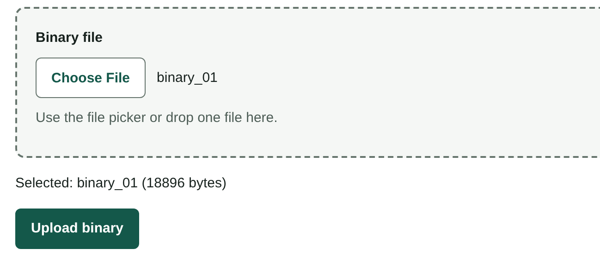
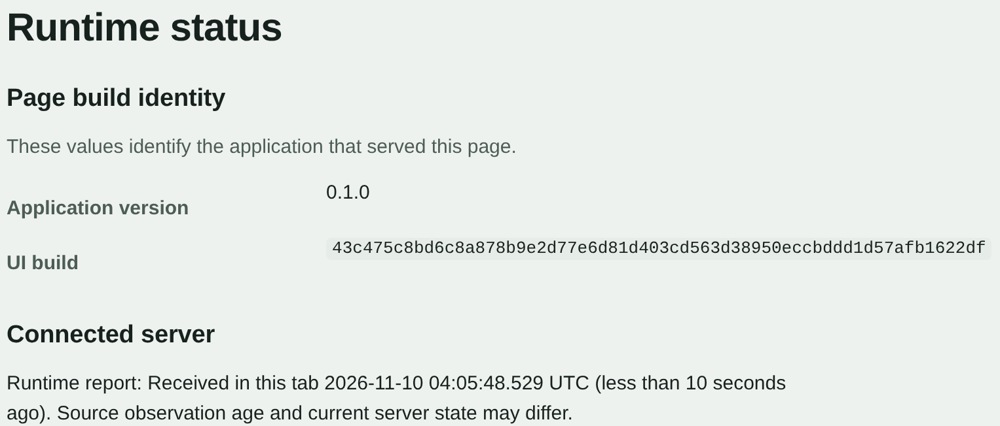

| # | 취약점 유형 | CWE | 참조 패치 |
|---|---|---|---|
| 01 | Out-of-Bounds Write | CWE-787 | 통과 |
| 02 | Out-of-Bounds Read | CWE-125 | 통과 |
| 03 | Use-After-Free | CWE-416 | 통과 |
| 04 | Double Free | CWE-415 | 통과 |
| 05 | Format String | CWE-134 | 통과 |
| 06 | Integer Overflow | CWE-190 | 통과 |
| 07 | Null Pointer Dereference | CWE-476 | 통과 |
| 08 | Uninitialized Memory Use | CWE-908 | 통과 |
| 09 | Memory Leak | CWE-401 | 통과 |
| 10 | Command Injection | CWE-78 | 통과 |
| 데이터셋 | 함수 수 |
|---|---|
| 합성 ELF 코퍼스심볼 유무 쌍으로 만든 합성 프로그램 | 100+ |
| GCC 16.2.0 오라클DWARF 기반 함수 경계와 이름 정답 | 12,844 |
| 채점 가능 함수스트립 빌드 시작점 재현율 99.5% | 3,284 |
Java API로 앱에 내장. 함수, 문자열, 호출 관계를 추출하고 디컴파일
ACP v1 규격으로 설계. 이번 검증은 테스트용 응답기 사용
JDK 21. 워크플로, 증거 기록, 웹 서버
ASan, UBSan, LSan과 컴파일 진단. 명령어 삽입은 별도 동작 검사
bwrap과 Docker. 네트워크 없는 읽기 전용 환경에서만 실행
Preact SPA. 업로드, 작업 조회, 소스와 증거 열람
※ 복원과 패치 응답은 수용 검증 스크립트에 든 테스트용 응답기의 고정 응답이다. LLM의 능력을 보여 주는 결과가 아니며, 실제 LLM 연결은 진행 중이다. 위 출력은 2026.11.10 데모 발췌다. 최신 CI(11.16)는 별도로 10종 참조 패치를 검증하며, 모델 성능을 뜻하지 않는다.


| 단계 | 내용 | 상태 |
|---|---|---|
| A0-5 | Ghidra 추출, LLM 소스 복원 | 완료 |
| L6 | 10종 참조 패치 CI 검증 | 완료 |
| L4 | 자동 입력 생성, 취약점 탐색 | 완료 |
| L3 | LLM 패치와 회귀 검증 루프 | 거의 완료 |
| B | 실제 LLM 연결 (ACP) | 진행 중 |
| C | 내장 LLM 에이전트 | 예정 |
| D | Web GUI | 진행 중 |
| A6-15 | GCC, LLVM 대규모 복원 | 진행 중 |
10종 참조 패치 통과, 임의 바이너리로의 일반화는 미확인
참조 패치와 테스트 응답은 모델 성능 지표가 아니다
명령어 삽입은 별도 검사하며 임의 논리 오류는 보장하지 않는다
실제 LLM 적용, GCC 오라클로 정확도 측정